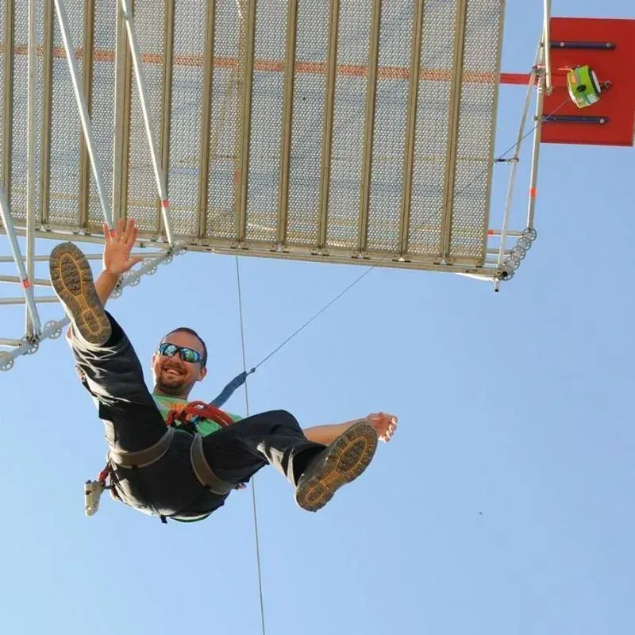

Prvo što pomislite kad vam netko spomene team building jest aktivnost, druženje i zabava, a onda vam na pamet počnu padati ideje o zbližavanju među radnicima i podizanju radne atmosfere.
Barban bi vam također trebao pasti prvi na pamet jer se upravo kod nas organiziraju najbolji team building programi za veće ili manje firme — od 10 do preko 200 ljudi.
Osim što smo najveći adrenalinski park u Hrvatskoj te nudimo igre koje ne možete pronaći nigdje drugdje, poput najviše umjetne stijene za penjanje na otvorenom, horizontalnog ljudskog katapulta ili 11 m visoke ljuljačke koja neće nikoga ostaviti ravnodušnim, organiziramo druženje i zabavu koja može trajati nekoliko sati. Naravno, uz sve te aktivnosti neizostavni dio team buildinga jesu hrana i piće.
Kako bi to izgledalo za team building od 30 osoba: Nakon dolaska u Glavani Park i upoznavanja sa samim parkom, podijelimo grupu na pola — u dvije grupe po 15 osoba. Jedna grupa odlazi na 11 m visoku ljuljačku, dok druga na penjanje u osnovni dio parka (žuta, plava i crna staza).
Grupa koja je prva bila na ljuljački, po završetku, odlazi na penjanje kao prethodna grupa. Kada i druga grupa prođe ljuljačku, nakon otprilike 2 sata penjanja, svi zajedno mogu uživati u hrani i piću, nakon čega kreće slatko natjecanje na stijeni za penjanje i igra povlačenja konopa.
Stijena za penjanje visoka je 12 m, a dvije osobe u isto vrijeme kreću na penjanje. Svaka osoba penje se dva puta, na svakoj strani stijene jednom, te se zbrajaju vremena. Osoba s boljim vremenom odlazi u sljedeći krug.
Kako bi natjecanje bilo jednako zahtjevno prema svima, visina na koju se treba popeti povećava se s približavanjem finala, a u finalu se računa jedino penjanje do vrha stijene.
Iako je ovo više individualno natjecanje, povlačenje konopa to svakako nije — potrebno je raditi kao tim. Nakon što saznamo pobjednika, ekipa odlazi na opuštanje u razgovoru, muzici, piću i stolnom tenisu.
Ako se radi o većem broju ljudi — 50, 100 ili 200 — organiziramo druge programe s partnerima Istra Adventure i Ranch Barba Tone: jahanje, quad i buggy, kayak, Escape Castle u Savičenti, pješačenje i bicikliranje u okolici Žminja.
Javite nam se s povjerenjem i prepustite organizaciju vašeg dana ili vikenda nama — Glavani Park, jahanje, quad/buggy/kayak, hrana u konobi Vorichi, Escape Castle, bicikliranje, hodanje i istraživanje Istre, piknik u prirodi i starinske igre.
Nazovite +385 91 896 4525 za planiranje team buildinga. Park radi 9–17 h (posljednji ulaz 15 h).